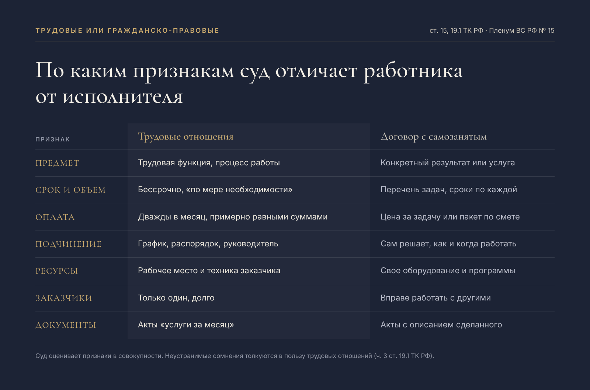

В профессиональном чате снова вопрос про самозанятых. Специалист несколько месяцев работает с одним заказчиком и получает доход только от него. Заказчик опасается, что отношения признают трудовыми и доначислят налоги, поэтому дробит суммы по месяцам и пишет в актах разное назначение платежа. Спасет ли это?
Короткий ответ: нет. Отношения квалифицируют по тому, как работа устроена на деле, а не по формулировкам в актах. Разные назначения платежа при одинаковой по сути работе скорее выглядят как маскировка зарплаты.
Один заказчик - это еще не нарушение
Закон не запрещает самозанятому работать на одного клиента. Прямой запрет есть только для доходов от бывшего работодателя, если с увольнения прошло меньше двух лет (п. 8 ч. 2 ст. 6 Федерального закона от 27.11.2018 № 422-ФЗ, далее - Закон № 422-ФЗ).
Но единственный заказчик и регулярные выплаты - сигналы, с которых инспекция начинает проверку (письмо ФНС России от 15.04.2022 № ЕА-4-15/4674@). Дальше оценивают совокупность признаков, а неустранимые сомнения толкуются в пользу трудовых отношений (ч. 3 ст. 19.1 Трудового кодекса Российской Федерации, далее - ТК РФ).
Чек-лист: 10 признаков трудовых отношений
Признаки собраны из ст. 15 и 19.1 ТК РФ, постановления Пленума Верховного Суда РФ от 29.05.2018 № 15, письма ФНС и свежей практики. Чем больше совпадений с вашей ситуацией, тем выше риск.
- Предмет договора - функция, а не результат. «Ведение финансового учета» или «сопровождение продаж» вместо конкретных задач со сроком и ценой. Именно трудовая функция отличает трудовой договор от договора оказания услуг (ст. 15 ТК РФ).
- Договор без срока и сметы. Нет перечня работ, объема и цены по каждой задаче. В деле № А04-2065/2025 суды учли это как признак подмены трудовых отношений: договоры заключались на неопределенный срок, без вида, объема и цены услуг.
- Выплаты по графику зарплаты. Вознаграждение перечисляется два раза в месяц примерно одинаковыми суммами. Такой порядок повторяет выплату заработной платы не реже чем каждые полмесяца (ч. 6 ст. 136 ТК РФ), а Пленум ВС РФ в постановлении № 15 относит периодическую выплату вознаграждения к признакам трудовых отношений.
- Единственный заказчик долгое время. Сам по себе не запрещен, но входит в перечень признаков из письма ФНС и усиливает все остальные.
- Исполнитель - бывший сотрудник. Меньше двух лет после увольнения такой доход вообще не облагается НПД, позже - сильный аргумент для инспекции.
- Договор подписан сразу после регистрации в качестве самозанятого или регистрация прошла по инициативе заказчика. ФНС прямо называет это признаком подмены трудовых отношений.
- График и распорядок. Рабочие часы, обязательные планерки, согласование отпуска, подчинение внутренним правилам.
- Встроенность в команду. Должность в оргструктуре или подписи, непосредственный руководитель, корпоративная почта на имя исполнителя.
- Работа на средствах заказчика. Рабочее место, техника, лицензии программ, форма - все от заказчика.
- Акты-заглушки. «Услуги за октябрь» без описания сделанного. Разные формулировки назначения при одной и той же работе не спасают.
Отметили три-четыре пункта - отношения стоит перестроить. В деле № А04-2065/2025 суды оценили признаки в совокупности, а довод компании о том, что у исполнителей не было графика, опровергли показания свидетеля о режиме работы, перерывах и подчинении (постановление Арбитражного суда Дальневосточного округа от 27.02.2026 № Ф03-141/2026).

Что будет при переквалификации
Заказчик становится работодателем задним числом. Он доплачивает НДФЛ со всех выплат и страховые взносы, плюс пени и штрафы по ст. 122 и 123 Налогового кодекса Российской Федерации. За ненадлежащее оформление трудовых отношений возможен еще административный штраф по ч. 4 ст. 5.27 Кодекса Российской Федерации об административных правонарушениях.
Уплаченный исполнителем НПД автоматически не зачтут: в деле № А04-2065/2025 суды отклонили такой довод заказчика, указав, что переплата по НПД не может быть зачтена в счет НДФЛ без волеизъявления самого плательщика НПД.
И главное: договориться с исполнителем «если что, компенсируешь» не получится. Налоговые последствия несет заказчик как налоговый агент и плательщик взносов. Условие о компенсации даст лишь право требовать деньги в суде, а если отношения признают трудовыми, материальная ответственность работника будет ограничена правилами ТК РФ.
Формулировки для договора с самозанятым
Договор защищает заказчика только тогда, когда описывает результат, а не должность. Формулировки ниже работают, только если на практике все устроено так же, как написано.
- Предмет. «Исполнитель обязуется оказать услуги, перечень, объем, сроки и стоимость которых согласованы в Заданиях (Приложение № 1). Каждое Задание содержит описание результата, срок его достижения и цену».
- Самостоятельность. «Исполнитель самостоятельно определяет способы, время и место оказания услуг. Исполнитель не подчиняется правилам внутреннего трудового распорядка Заказчика и не входит в его организационную структуру».
- Средства и материалы. «Исполнитель оказывает услуги с использованием собственного оборудования и программного обеспечения. Заказчик предоставляет только исходные данные и доступы, необходимые для выполнения Задания».
- Другие заказчики. «Исполнитель вправе оказывать аналогичные услуги третьим лицам при условии соблюдения конфиденциальности информации Заказчика».
- Цена и оплата. «Стоимость услуг определяется по каждому Заданию. Оплата производится после подписания акта по соответствующему Заданию и передачи чека, сформированного в порядке ст. 14 Закона № 422-ФЗ».
- Акт. «В акте указываются номер Задания, перечень фактически оказанных услуг, их результат и стоимость».
- Статус плательщика НПД. «Исполнитель заверяет, что не состоял с Заказчиком в трудовых отношениях в течение двух лет до заключения договора, и обязуется в течение одного рабочего дня уведомить Заказчика о снятии с учета в качестве плательщика налога на профессиональный доход».
Чего избегать в тексте договора
- Слов из трудового права: «должность», «трудовые обязанности», «рабочее время», «отпуск», «оклад», «премия».
- Фиксированной ежемесячной оплаты без привязки к объему.
- Предмета вида «ведение», «сопровождение», «выполнение обязанностей» без перечня задач.
- Обязанности соблюдать внутренние регламенты и график заказчика.
- Бессрочного действия без заданий и сроков.
Как снизить риск
- Договор - на конкретный результат: перечень задач, срок и цена по каждой задаче или пакету, без фиксированной суммы «за месяц».
- В актах - реально выполненная работа. Если суммы повторяются, за ними должен стоять разный объем.
- Нет признаков подчинения: графика, должности, обязательного участия во внутренних совещаниях, подчинения локальным регламентам.
- Исполнитель работает на своем оборудовании и в своих программах и вправе работать с другими заказчиками.
- Если по сути работа - постоянная должность, безопаснее трудовой договор, в том числе на неполное время.
Формулировки в актах и дробление платежей не меняют сути отношений. Защищает только правильно устроенная работа: задачи, результат и независимость исполнителя.